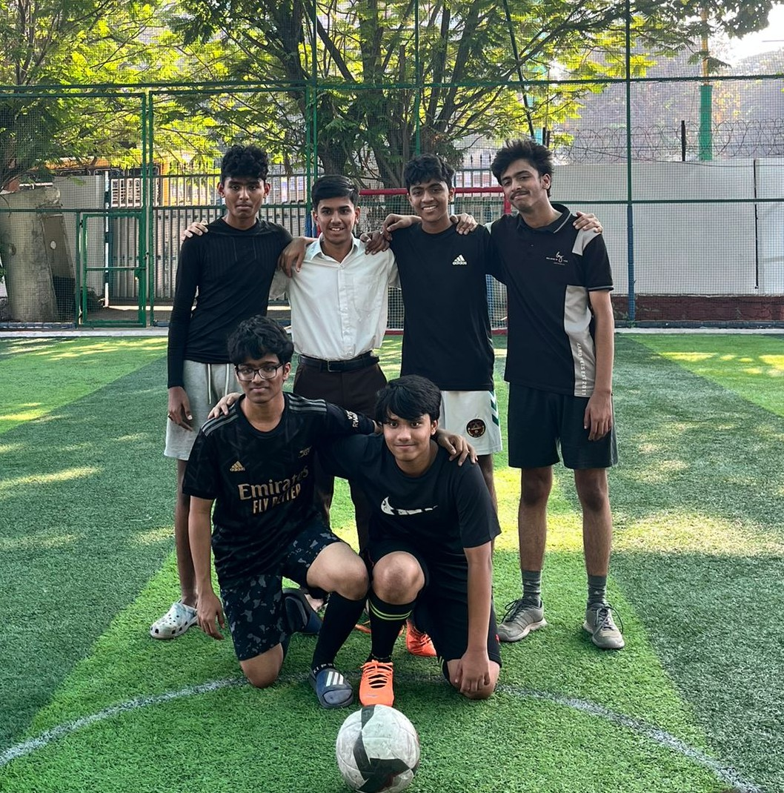
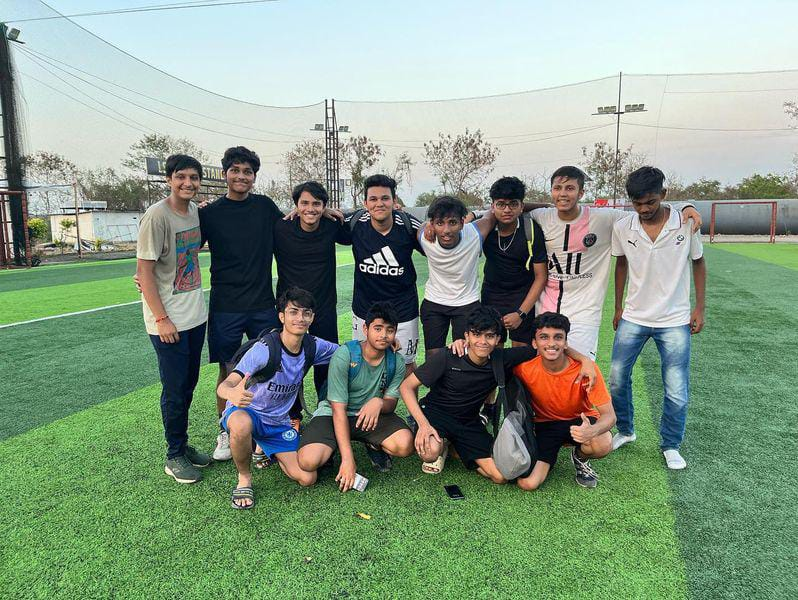
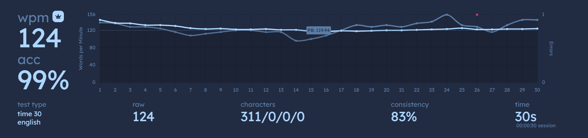
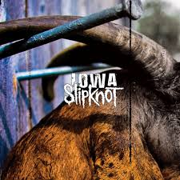
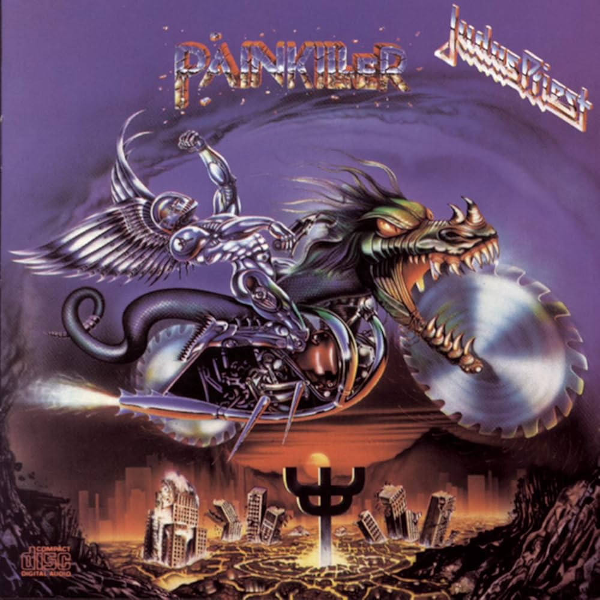
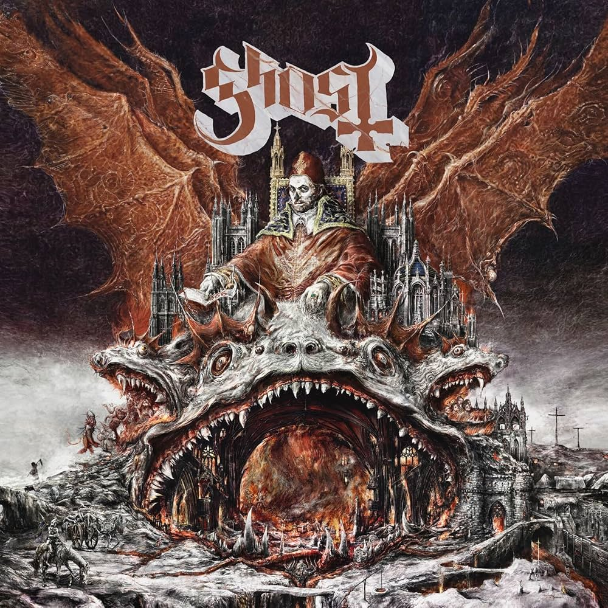
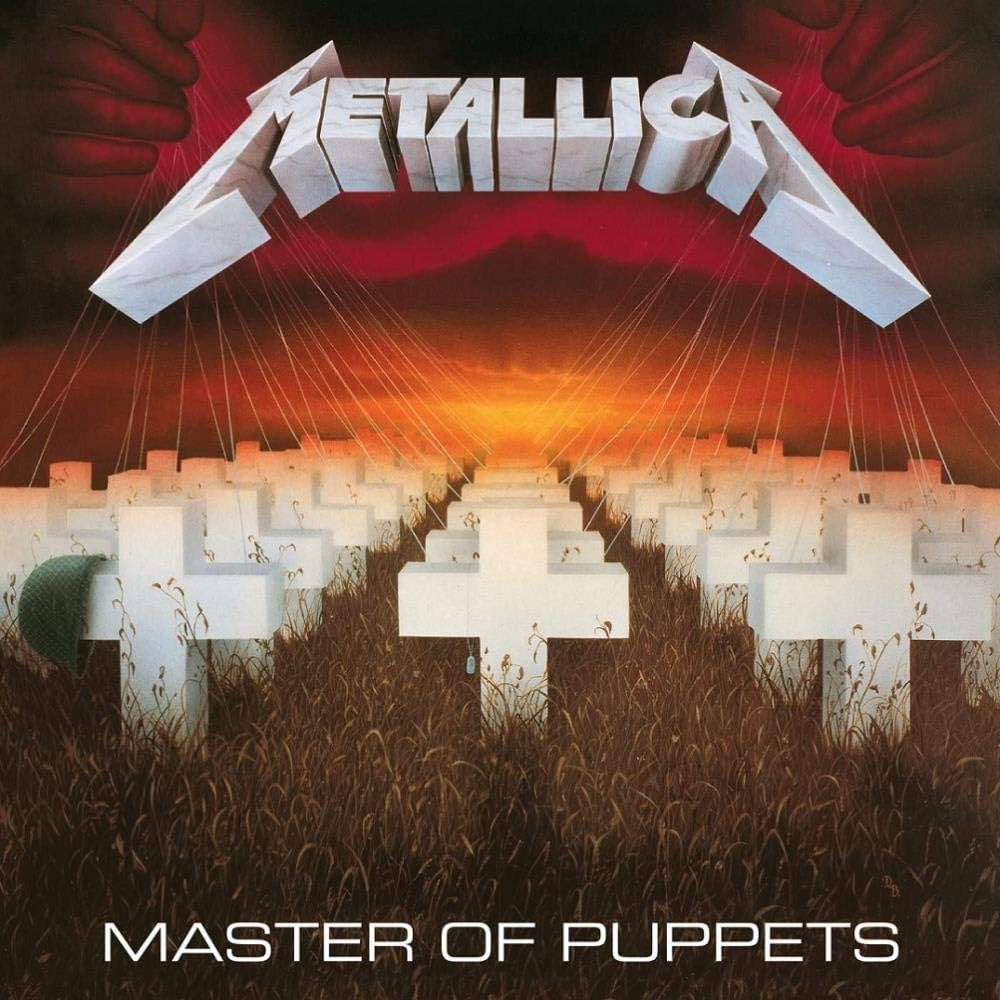
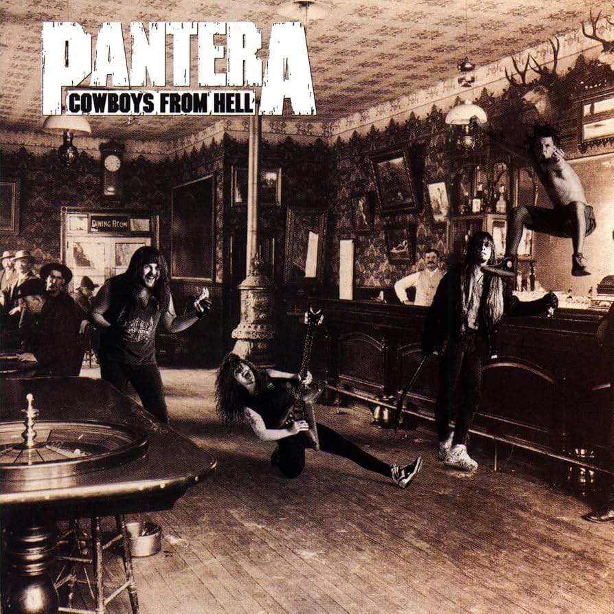

Passed the ISC 2024 examinations with flying colours. 93%.
Lodha World School, Thane (Grade X)
Passed the ICSE 2022 examinations with flying colours. 86%.
Miscellaneous
Have scored 99.95 percentile in the 2024 MHT-CET examinations for BBA and BMS.
SKILLS AND HOBBIES
Playing football
I play football for fun, though I've also played in inter-class competitions and was a runner-up goalkeeper in Singhania.


Editing Photos
I've quite adept at Adobe Photoshop and have used to it to create memes, video thumbnails, and overall perform color grading on photos taken. I've learnt it through watching tutorials on YouTube.
Touch typing
This is a skill I've recently picked up, and involves typing on a computer without looking at the keyboard.
The fastest I've typed is about 124 Words per Minute on a 30-second test.

Playing the Guitar
It is a hobby that I have recently picked up. Learning it is fun, but also very challenging. It will put your patience and discipline to the test.
Reading novels
I've recently finished Mario Puzo's The Godfather, and am going to read The Silent Patient by Alex Michaelides.
Listening to Music
I love to listen to metal music. The rapid tremolos, the melodic solos and the constant onslaught of rapid drumming
is sure way to give you a rush of adrenaline and uplift your mood.
Here are some of my favorite albums that I listen frequently to:





Creating PowerPoints
I have a keen eye for aesthetics, and can prepare visually appealing powerpoint presentations.
Coding
I've learnt the following languages during my school and college days:
Scratch
C
Python
HTML
Java
I have basic knowledge of object oriented programming, values and data types, nested contructs, arrays, and string handling.
Gardening
I have a large collection of plants which I water regularly in my balcony.